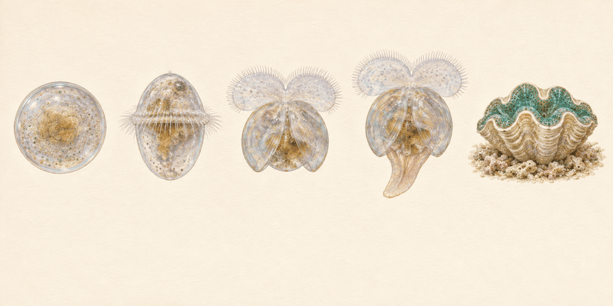

Quick facts
The true giant clam (Tridacna gigas) is the largest living bivalve. NOAA reports a length up to 51 inches and weights exceeding 496 pounds. Giant clams can live about a century.
Giant clams belong to the cockle family, Cardiidae. Tridacninae is the giant clam subfamily, which includes the genera Tridacna and Hippopus.
Habitat and depth: shallow Indo-Pacific reefs, lagoons, and sandy or hard bottoms, typically 6–65 feet. Juveniles can be eaten by fishes, crabs, octopuses and predatory snails.

Ocean in Motion · What to look for
Start with the wavy shell, then look for the colorful mantle, the living tissue that lines the shell and spreads into the light. Look for the two openings where water enters and leaves.
Ask a young visitor: “Which part is the hard shell, and which part is the living animal?” Then ask, “What tiny neighbors might live inside that colorful tissue?”
The Aquarium’s giant clam profile identifies the exhibit animals as Tridacna sp. Use exhibit signage or staff identification for the individual on display.

How a giant clam uses sunlight
Giant clams filter tiny particles from seawater. They also get nutrients made by microscopic symbiotic algae living in fine tubes in their mantle. The clam provides a protected place in sunlight, and the algae supply products of photosynthesis.
Reflective cells called iridocytes help redistribute photosynthetically useful light into the tissue. The arrangement helps light reach algae deeper in the mantle.
From spawning to settlement
Giant clams mature first as sperm producers. Mature individuals can produce both sperm and eggs. Releasing sperm before eggs helps limit self-fertilization during broadcast spawning.
Fertilized eggs hatch into swimming trochophores, then develop into veligers. A pediveliger develops a foot that helps it explore the bottom. After settlement, the larva transforms into a juvenile clam. Timing varies with species and conditions.

How giant clams support a reef
Giant clams filter particles, and their large shells provide surfaces and shelter for reef life. Empty shells can continue to provide habitat. Shell growth bands can also preserve clues to past ocean conditions.
Some algae expelled by giant clams stay viable. In a lab study, coral larvae acquired algal symbionts from giant clam fecal pellets. Whether adult bleached corals can benefit in the wild, or whether this could speed reef recovery, remains open.
Conservation
The Aquarium cites a global IUCN assessment of Critically Endangered for Tridacna gigas. NOAA’s species profile lists CITES Appendix II and a proposed U.S. endangered listing.
Harvest for meat and shells has depleted wild populations. Marine heatwaves can bleach giant clams when they lose symbiotic algae. Ocean acidification can add stress for developing shell-forming animals.